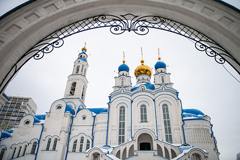
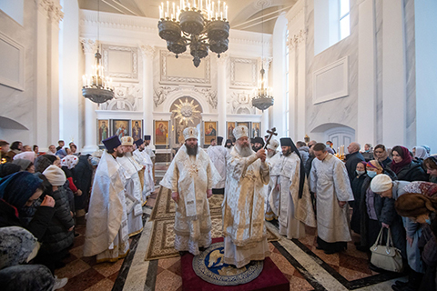

{kind=link}
О нас

Храм Александра Невского находится в Советском районе Казани, на территории крупного жилого района Азино, на пересечении улиц Академика Сахарова и Рашида Вагапова.
Инициатором строительства храма Александра Невского стал его будущий настоятель протоиерей Владимир Пономарёв. Место под него было выбрано в 2007 году и в том же году, 6 декабря, в день памяти святого благоверного князя Александра Невского оно было освящено архиепископом Казанским и Татарстанским Анастасием.

Строительство храма началось 25 июля 2010 года и велось за счёт средств анонимных казанских предпринимателей. Поскольку финансирование шло с перебоями, процесс строительства затянулся. 17 июля 2014 года, в канун дня памяти святого Сергия Радонежского, на храме были установлены купола и кресты. В 2015 году его строительство завершились, а 7 января 2016 года состоялось первое богослужение в нижней церкви.

6 декабря 2021 года, в день памяти святого благоверного князя Александра Невского митрополит Казанский и Татарстанский Кирилл совершил великое освящение Александро-Невского храма города Казани. В этот же день по благословению главы Татарстанской митрополии викарий Казанской епархии епископ Елабужский Иннокентий совершил освящение нижнего храма во имя преподобного Сергия Радонежского.
Подробно читать здесь
С 14 декабря 2021 года Храм Александра Невского административно входит в состав II Казанского благочиния, до этого времени он числился в упразднённом IV Казанском благочинии.
На территории храмового комплекса находится часовня Владимирской иконы Божией Матери. Это небольшое одноэтажное здание простой архитектуры, увенчанное одной главкой и обшитое снаружи пластиковой вагонкой. Часовня была открыта в 2008 году как временное молитвенное сооружение до постройки храма Александра Невского.